第十四节 测试
- 重温Apache菜谱
- 使用
Serverspec进行自动化测试 RSpec DSL语法- 使用
Foodcritic进行自动化测试 - 使用
ChefSpec进行自动化测试 - 使用
Let进行惰性求值 - 在
spec_helper.rb中共享测试代码
关于测试使用类似Chef的配置管理工具可以帮你实现50％的自动化测试和验证。因为由Chef进行 的基础架构自动化具备可重复性，它很自然地使应用程序运行环境更容易进行测试。
这也是为什么我们就介绍Test Kitchen的原因，这样你可以能在实践中理解到这个概念。在整本书的各个章节中，都使用Test Kitchen将Chef代码部署到本地的沙盒测试环境并进行测试和验证，这可以帮助确保如果将同样的代码部署到生产环境，其结果一样。
自动化测试除了使用Chef以外的另外50%，则是关于测试和部署自动化代码的策略。就像在部署应用程序代码时最好一点一点渐进式部署一样，在最理想的情况下，部署基础架构的改变一样也最好是一步一步渐进式进行。图展示了理想的渐进式开发-测试一部署周期。这样的策略可以帮助保证完成足够的测试，从而得到高质量的基础架构和应用程序。
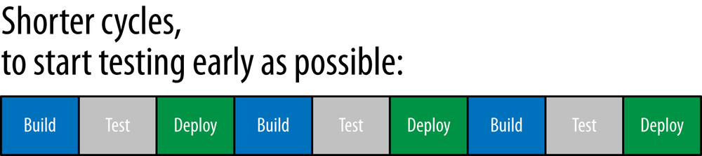
渐进式短期开发周期相反的长期开发周期（开发完很大的新功能再考虑部署）中，你很难预测什么时候开发结束；而如果测试留在最后一刻才进行，往往需要使用更长的时间测试很大的新功能；因而测试时间往往被缩短而牺牲产品质量。
这样的习惯同样会形成“应用开发完了，现在让运维去部吧”这样的情形―应用在开发环境完美运行，却无法在生产环境中运作。类似Chef的配置管理工具尝试解决的正是这个问题。
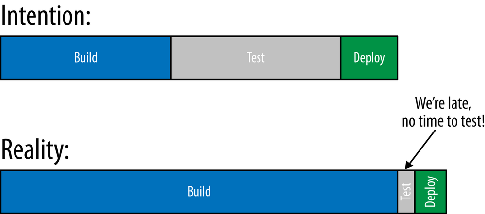
再者，寻找和修复软件和基础架构代码中的问题是需要成本的，而且发现问题的时间越接近周期结束修复这些问题的成本就越高。图展示了在开发流程中修复问题的相对成本。在这个角度看，基础架构代码遵循同样的道理：
- 需求
- 设计
- 开发
- 开发测试
- 整合测试
- 生产环境
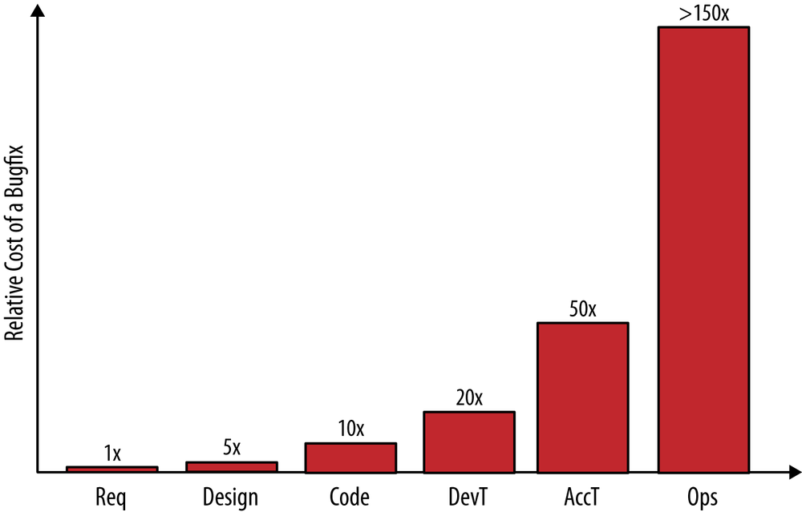
在需求和设计阶段寻找和解决问题并不是那么昂贵， 然而在后面阶段走彻越远，修复问题的成本则越高。
等到所有开发代码都完成时再尝试寻找问题， 相比一早就发现问题需要的成本花费要高出20至50倍.
如果代码已经郎署到生产环境， 修复问题的花费相比早期高150倍
这应该提醒你在做Che颇目时应做到以下几点。
- 第一次就做对以免未来再修复问题
- 越早发现问匆越好越接近写代码的时族就发砚问越越立好
- 尽可能做渐进式的小改变胡试小的改变要容易很多
Chef包含可以帮你做到达些目标的测试工其。所示Chef提供多种侧试工具在你撰写菜谱时尽早对代码中的问题提供反馈
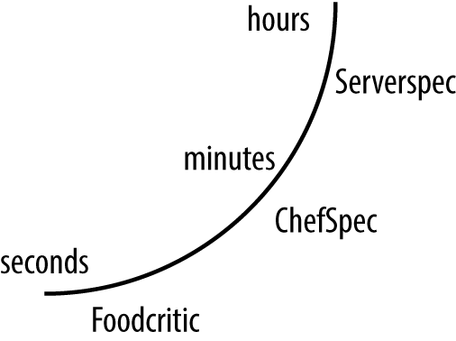
有多种不同的测试工具，因为是每个工具针对菜谱开发过程中的特定阶段。以下是对每 种测试工具的概览以及你应该在什么时候使用它：
- 在编辑器中打入Chef代码的时候
- 使用
Foodcritic可以分析你的Chef编程风格。 - 在部署到测试节点之前
- 使用
ChefSpec可以帮助你保证代码的组织和文档符合标准。 - 在部署到测试节点后
- 使用
Serverspec验证菜谱产生的行为与预期相符。
如果使用Chef客户端，需要安装一些额外的Ruby应用来支持自动化测试。运行以下命令安装本章所需的工具：
$ sudo gem install foodcritic --no-ri --no-rdoc
$ sudo gem install chefspec --no-ri --no-rdoc
如果是Chef开发包，那它己经包含所有所需工具了。
1、重温Apache菜谱
Generate a cookbook called apache-test.
Chef Development Kit:
$ chef generate cookbook apache-test
$ cd apache-test
Chef Client:
$ knife cookbook create apache-test --cookbook-path .
$ cd apache-test
$ kitchen init --create-gemfile
$ bundle install
apache-test/kitchen.yml
---
driver:
name: vagrant
provider: vmware_desktop
provisioner:
name: chef_zero
always_update_cookbooks: true
platforms:
- name: centos65
driver:
box: learningchef/centos65
box_url: learningchef/centos65
network:
- ["private_network", {ip: "192.168.33.38"}]
suites:
- name: default
run_list:
- recipe[apache-test::default]
attributes:
apache-test/recipes/default.rb
#
# Cookbook:: apache-test
# Recipe:: default
#
# Copyright:: 2019, The Authors, All Rights Reserved.
package "httpd"
service "httpd" do
action [ :enable, :start ]
end
template "/var/www/html/index.html" do
source 'index.html.erb'
mode '0644'
end
Chef Development Kit:
$ chef generate template index.html
Chef Client:
$ touch templates/default/index.html.erb
在模拟测试节点上有三个网络界面lo,eth0,eth1 ERB中的脚本将渲染以下输出：
- lo
- eth0
- eth1
提示：在ERB模板中要仔细分辨＜% %＞和＜％=％＞。
ERB模板中不包含等号的＜% %＞标签作为脚本执行；语句执行，但不作为字符串渲染到输出文件中。然后，我们使用带有等号的ERB标签＜%= %＞在脚本的条件符合时输出其结果。
apache-test/templates/default/index.hmtl.erb
<html>
<body>
<pre><code>
This site was set up by <%= node['hostname'] %>
My network addresses are:
<% node['network']['interfaces'].keys.each do |iface_name| %>
* <%= iface_name %>:
<%= node['network']['interfaces'][iface_name]['addresses'].keys[1] %>
<% end %>
</code></pre>
</body>
</html>
kitchen converge
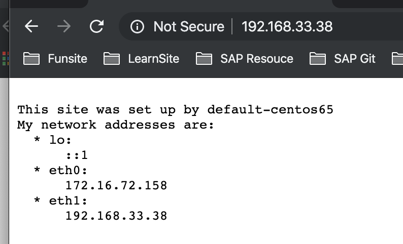
2、使用Serverspec进行自动化测试
2-1 撰写你的第一个Serverspec测试
默认情况下，Test kitchen会在test/integration子目录中寻找相关的文件.
Serverspec在test/integration目录下的一 些子目录中守找它的测试文件。
首先，在test/integration目录下需要针对每个测试套件的名字(suite name)有一个对应的测试目录：
<cookbook_root>
└── test
└── integration
└── <suite_name>
套件（suite) 的名字可以在kitchen.yml文件中的suites:部分找到。
default是默认生成的套件名字。
Linux/Mac OS X:
$ mkdir -p test/integration/default
Windows:
> mkdir test\integration\default
根据约定，Serverspec预期包含测试代码的文件以spec.rb结尾。如示例16-4所示，让我们 在default/serverspec/default_spec.rb子目录中创建default_spec.rb文件。
set :backend, :exec
describe 'web site' do
it 'responds on port 80' do
expect(port 80).to be_listening 'tcp'
end
end
require 'serverspec' 1
set :backend, :exec 2
describe 'web site' do 3
it 'responds on port 80' do
expect(port 80).to be_listening 'tcp'
end
end
require语句用来加载serverspec的gem库，这样我们可以引用Serverspec的类和方法，比如set方法。set语句让我们配置serverspec如何运行。在本例中，我们将:backend属性设定为:exec来告诉serverspec测试代码将会在同一台机器运行。- 测试用
RSpec DSL（领域专用语言）写，使用describe和it语句。在本例中，我们使用RSpec DSL写检查网站是否使用TCP协议监听80端口（HTTP网站默认端口）的测试。
我们将稍后在“rspec-syntax”中进一步解释RSpec DSL以及测试语法结构。现在，只需要明白这段代码是用来测试某个服务监听了80端口就好。 要运行这段侧试代码，首先需要确保所有的gem文件在测试节点一都已经安装好。我们可以使用kitchen setup命令。现在运行kitchen setup:
$ kitchen setup
-----> Starting Kitchen (v2.3.3)
-----> Setting up <default-centos65>...
Finished setting up <default-centos65> (0m0.00s).
-----> Kitchen is finished. (0m0.73s)
一旦测试节点拥有所有的测试库就可以通过运行kitchen verify命令来运行侧试。诸 现在就试试。如果代码没有语法错误，输出应该显示网站正常运行井响应80端口：
$ kitchen verify
-----> Starting Kitchen (v2.3.3)
-----> Verifying <default-centos65>...
Preparing files for transfer
-----> Installing Busser (busser)
Fetching thor-0.19.0.gem
Fetching busser-0.7.1.gem
Successfully installed thor-0.19.0
Successfully installed busser-0.7.1
2 gems installed
-----> Installing Busser plugin: busser-serverspec
Plugin serverspec installed (version 0.5.10)
-----> Running postinstall for serverspec plugin
Suite path directory /tmp/verifier/suites does not exist, skipping.
Transferring files to <default-centos65>
-----> Running serverspec test suite
-----> Installing Serverspec..
Fetching rspec-expectations-3.9.0.gem
Fetching rspec-3.9.0.gem
Fetching multi_json-1.14.1.gem
Fetching net-scp-2.0.0.gem
Fetching rspec-mocks-3.9.0.gem
Fetching rspec-its-1.3.0.gem
Fetching net-ssh-5.2.0.gem
Fetching diff-lcs-1.3.gem
Fetching serverspec-2.41.5.gem
Fetching net-telnet-0.1.1.gem
Fetching specinfra-2.82.4.gem
Fetching sfl-2.3.gem
-----> serverspec installed (version 2.41.5)
/opt/chef/embedded/bin/ruby -I/tmp/verifier/suites/serverspec -I/tmp/verifier/gems/gems/rspec-support-3.9.0/lib:/tmp/verifier/gems/gems/rspec-core-3.9.0/lib /opt/chef/embedded/bin/rspec --pattern /tmp/verifier/suites/serverspec/\*\*/\*_spec.rb --color --format documentation --default-path /tmp/verifier/suites/serverspec
web site
responds on port 80
Finished in 0.05453 seconds (files took 0.27863 seconds to load)
1 example, 0 failures
Finished verifying <default-centos65> (0m14.66s).
-----> Kitchen is finished. (0m15.13s)
前面展示了你可以使用RSpc DSL测试代码来代替手动验证确保菜谱正确运作
$ kitchen login
Last login: Mon Dec 9 10:01:56 2019 from 172.16.72.2
Welcome to your Packer-built virtual machine.
[vagrant@default-centos65 ~]$ sudo service httpd stop
Stopping httpd: [ OK ]
[vagrant@default-centos65 ~]$ exit
logout
Connection to 127.0.0.1 closed.
$ kitchen verify
-----> Starting Kitchen (v2.3.3)
-----> Verifying <default-centos65>...
Preparing files for transfer
-----> Busser installation detected (busser)
-----> Busser plugin detected: busser-serverspec
Removing /tmp/verifier/suites/serverspec
Transferring files to <default-centos65>
-----> Running serverspec test suite
/opt/chef/embedded/bin/ruby -I/tmp/verifier/suites/serverspec -I/tmp/verifier/gems/gems/rspec-support-3.9.0/lib:/tmp/verifier/gems/gems/rspec-core-3.9.0/lib /opt/chef/embedded/bin/rspec --pattern /tmp/verifier/suites/serverspec/\*\*/\*_spec.rb --color --format documentation --default-path /tmp/verifier/suites/serverspec
web site
responds on port 80 (FAILED - 1)
Failures:
1) web site responds on port 80
Failure/Error: expect(port 80).to be_listening 'tcp'
expected Port "80" to be listening
/bin/sh -c netstat\ -tunl\ \|\ grep\ --\ :80\\\
# /tmp/verifier/suites/serverspec/default_spec.rb:7:in `block (2 levels) in <top (required)>'
Finished in 0.0632 seconds (files took 0.27264 seconds to load)
1 example, 1 failure
Failed examples:
rspec /tmp/verifier/suites/serverspec/default_spec.rb:6 # web site responds on port 80
/opt/chef/embedded/bin/ruby -I/tmp/verifier/suites/serverspec -I/tmp/verifier/gems/gems/rspec-support-3.9.0/lib:/tmp/verifier/gems/gems/rspec-core-3.9.0/lib /opt/chef/embedded/bin/rspec --pattern /tmp/verifier/suites/serverspec/\*\*/\*_spec.rb --color --format documentation --default-path /tmp/verifier/suites/serverspec failed
!!!!!! Ruby Script [/tmp/verifier/gems/gems/busser-serverspec-0.5.10/lib/busser/runner_plugin/../serverspec/runner.rb /tmp/verifier/suites/serverspec] exit code was 1
>>>>>> ------Exception-------
>>>>>> Class: Kitchen::ActionFailed
>>>>>> Message: 1 actions failed.
>>>>>> Verify failed on instance <default-centos65>. Please see .kitchen/logs/default-centos65.log for more details
>>>>>> ----------------------
>>>>>> Please see .kitchen/logs/kitchen.log for more details
>>>>>> Also try running `kitchen diagnose --all` for configuration
我们可以看到Chef发现httpd服务没有运行后将其开启
$ kitchen converge
$ kitchen verify
-----> Starting Kitchen (v2.3.3)
-----> Setting up <default-centos65>...
Finished setting up <default-centos65> (0m0.00s).
-----> Verifying <default-centos65>...
Preparing files for transfer
-----> Busser installation detected (busser)
-----> Busser plugin detected: busser-serverspec
Removing /tmp/verifier/suites/serverspec
Transferring files to <default-centos65>
-----> Running serverspec test suite
/opt/chef/embedded/bin/ruby -I/tmp/verifier/suites/serverspec -I/tmp/verifier/gems/gems/rspec-support-3.9.0/lib:/tmp/verifier/gems/gems/rspec-core-3.9.0/lib /opt/chef/embedded/bin/rspec --pattern /tmp/verifier/suites/serverspec/\*\*/\*_spec.rb --color --format documentation --default-path /tmp/verifier/suites/serverspec
web site
responds on port 80
Finished in 0.03277 seconds (files took 0.2189 seconds to load)
1 example, 0 failures
Finished verifying <default-centos65> (0m1.07s).
-----> Kitchen is finished. (0m1.60s)
3、RSpec DSL语法
在继续学习如何使用Serverspec之前，让我们先来看看RSpec DSL语法的基础，好让你了解Serverspec测试的语法基础。
RSpec DSL使用describe代码块包含一组测试。每个describe代码块由以下格式定义：
describe '<entity>' do
<tests here>
end
describe代码块的用途是将测试根据意图分组并描述被测试的实体。每个分组的描述作为字符串传递给describe。这个字符串描述是给运行测试的人作为文档在测试输出中查看。我们使用以下describe代码块来注明正在测试我们的网站：
describe 'web site' do
<tests here>
end
说明：RSpec DSL在幕后为这些代码块创建Ruby类为测试分组。
实际的测试代码在describe代码块里面的it代码块中定义，格式如下：
describe '<entity>' do
it '<description>'
<examples here>
end
end
it代码块也接受一个字符串参数来件为该具体的测试的文档
提供字符串responds on port 80即来说明我们的测试检查网站是否在80端口下运行
describe 'web site' do
it 'responds on port 80' do
...
end
end
在RSpec 3.0（当前的Chf开发包及客户端包含的版本）中, 测试应该以expect格式写
describe '<entity>' do
it '<description>'
expect(resource).to matcher matcher_parameter
end
end
资源(resource)，也称主题(subject）或命令（command)，是expect代码块的第一个参数，它代表被测试的实体。诸如Serverspec和ChefSpec的测试框架提供特定的资源来 执行广泛的验证。
匹配器（matcher）用来定义对于资源的等同或相反的期待值。它的格式以expect(资源）.to 来表示期待该资源等同于匹配器结果，以及以expect（资源).not_to表示期待该资源的结果相反于匹配器结果。
在我们使用的测试框架中也提供有特定用途的匹配器。 我们使用port资源（传递80作为参数）和be_listening匹配器（传递tcp 作为参数）来检查网站是否在80端口通过TCP协议运行：
describe 'web site' do
it 'responsponds on port 80' do
expect(port 80).to be_listening 'tcp'
end
end
如何知道类似port的资源和be_listening匹配器的存在呢?我们参考了Serverspec测试 框架的Serverspec文档（http://serverspec.org)，其中列举了它提供的资源和匹配器类。 在网页顶端点击Resource Types链接，你会看到指向Serverspec资源的链接
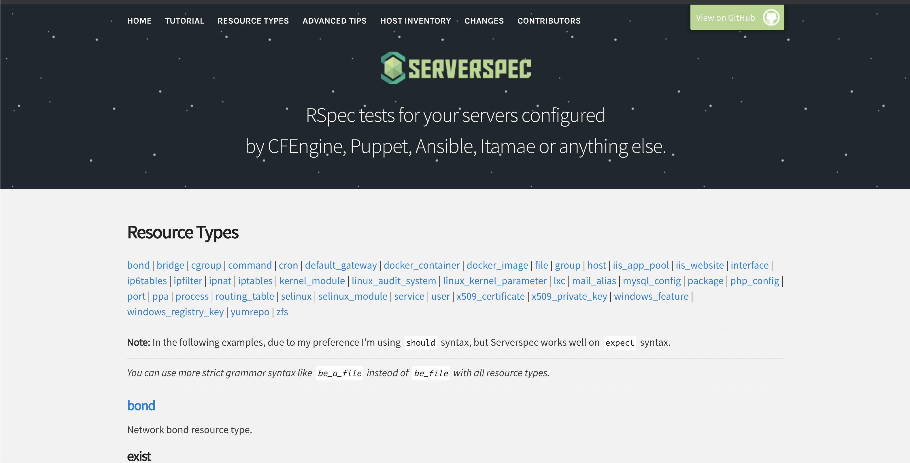
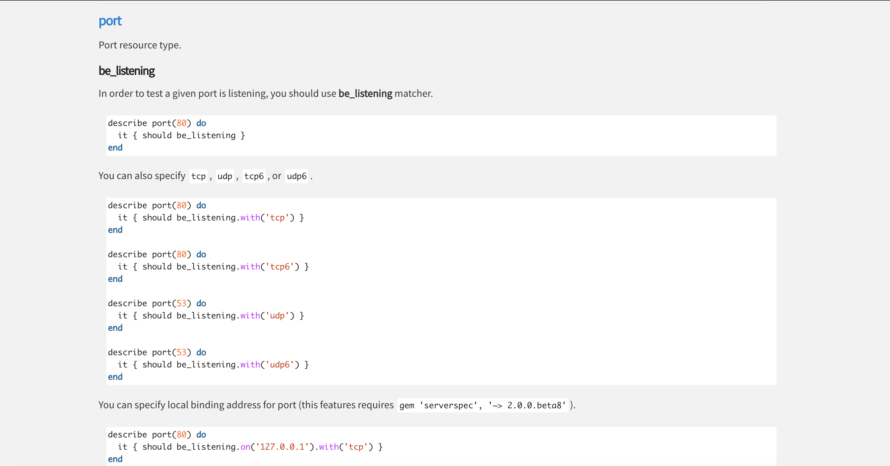
图展示如何将旧文档提供的sould格式代码转换为expect格式。
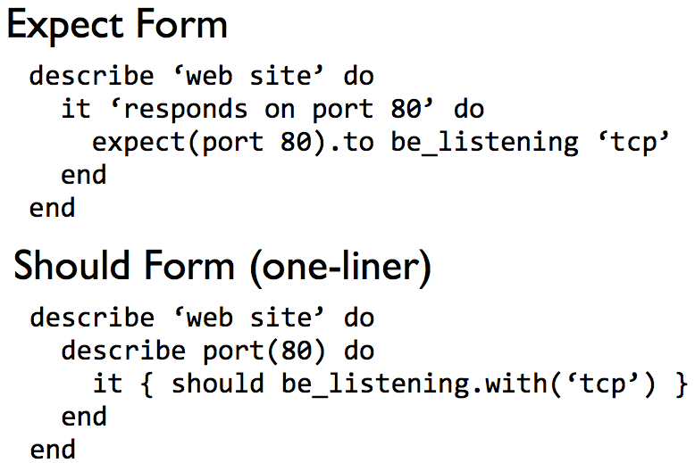
在sould格式中， 资源在it语句外部的describe语句中定义。
在expect格式中，它以参数传递给expect
should格式中,should或should not用来表达预期结果应等同或相反
在expect格式中，预期结果以.to或.not_to方法表达。最后，在should格式中，匹配器的参数传递进.with()方法, 而在expect格式中，它只是匹配一个参数。
4、Serverspec详解
供多个侧试文件共享的代码可以移到spec_helper.rb文件中, 在本例中我们只有一个测试文件，但现在请假设我们有多个测试文件。 注意这个文件包含default_spec.rb文件的前。
注意这个文件包含default_spec.rb文件前两行，如果我们有多个测试文件，这两行需要由所有测试执行进行，因此我们将其移到所有侧试共享的spec_helper.rb文件中以免需要重复多个测试文件中定义
`apache-test/test/integration/default/serverspec/spec_helper.rb
require 'serverspec'
set :backend, :exec
现在我们有了spec_helper.rb文件，修改default_spec.rb来使用spec_helper， 改变require语句并删除set语句，
/test/integration/default/serverspec/default_spec.rb
require 'spec_helper'
describe 'web site' do
it 'responds on port 80' do
expect(port 80).to be_listening 'tcp'
end
end
虽然在我们的例子里使用spec_helper.rb有点多此一举，但希望你能理解这个文件的意图一在有多个测试文件的时候，它可以帮助你将共享代码存放到同一个文件中以免在所有测试文件中重复。
在测试代码中，你可以在每个describe代码块中包含多个测试，事实上在真实的环境中每个describe也通常有很多测试该主题的不同案例。让我们在defauit_spec.rb添加一个新的测试。
虽然写测试验证了网站在80端口运行，但我们并没有验证网站的内容是正确的。让我们写一个测试来验证内容。
curl
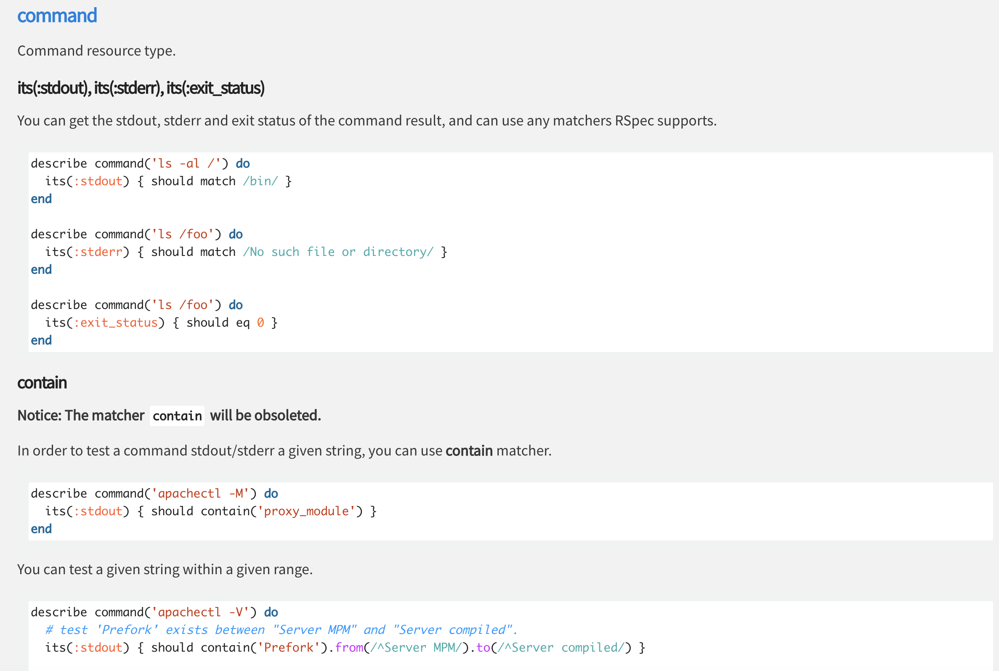
如添加一个新的测试到default_spec.rb文件。通过运行curl localhost命令，你可以检查网站的HTML输出来验证它的正确性。
通过在command资源上使用stdout属性，我们可以查看curl命令返回的结果。根据约定， 程序将它们的输出生成到两个不同的标准文件句柄：stdout（正常程序输出）和stderr（错误输出）。这样，其他程序可以打开这些句柄来自动查看内容。
我们的例子并不在意stderr中的错误信息，因为对于我们的侧试代码来讲，如果发生错误，得到一个Ruby异常就已经足够。在错误情况下，Serverspec自动生成这样的错误异常。在我们的测试代码中，只在意stdout中的内容。
运行curl localhost:80命令的结果以字符串返回。
我们通过称为正则表达式的Ruby功能，让RSpec匹配器match来在curl的执行结果中搜索特定内容。在 Ruby中，包含正则表达式的字符串被正斜杠字符（//）而不是单引号（''）或双引号（""）引用。
正则表达式是一个特殊的字符串格式，用来指定搜索字符串。在本例中，我们使用正则表达式在输出中搜索字符串内容eth1。在设定网站内容的时候，我们将网络界面的字符串包含在页面内容中，如果页面内容不包含字符串eth1，则说明正确的内容未被渲染。 同时，检查eth1字符串同时保证我们的测试节点虚拟机启用了eth1适配器。
apache-test/test/integration/default/serverspec/default_spec.rb
require 'spec_helper'
describe 'web site' do
it 'responds on port 80' do
expect(port 80).to be_listening 'tcp'
end
it 'returns eth1 in the HTML body' do
expect(command('curl localhost:80').stdout).to match /eth1/
end
end
首先，使用kitchen login命令登录到测试节点，并运行和我们测试中同样的curl localhost:80命令。以下例子展示了输出结果。复制输出的结果并运行exit命令返回开发机器：
$ kitchen login
Last login: Tue Dec 10 05:36:34 2019 from 172.16.72.2
Welcome to your Packer-built virtual machine.
[vagrant@default-centos65 ~]$ curl localhost:80
<html>
<body>
<pre><code>
This site was set up by default-centos65
My network addresses are:
* lo:
::1
* eth0:
172.16.72.158
* eth1:
192.168.33.38
</code></pre>
</body>
</html>[vagrant@default-centos65 ~]$ exit
logout
Connection to 127.0.0.1 closed.
https://rubular.com/
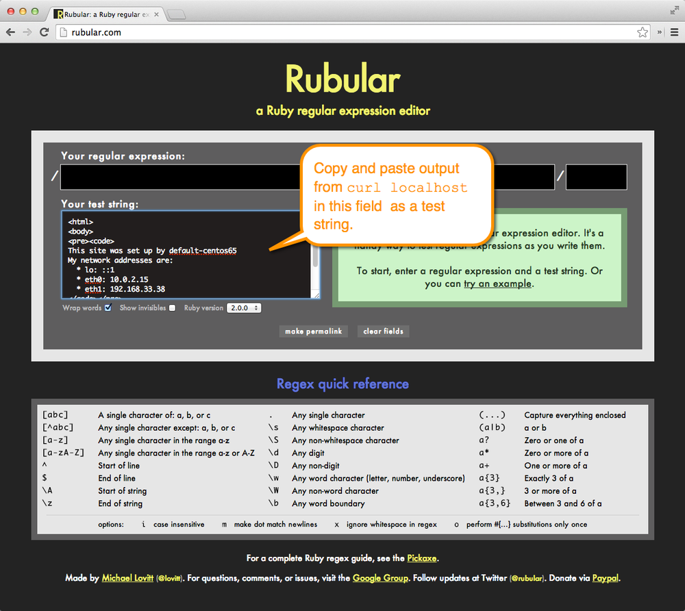
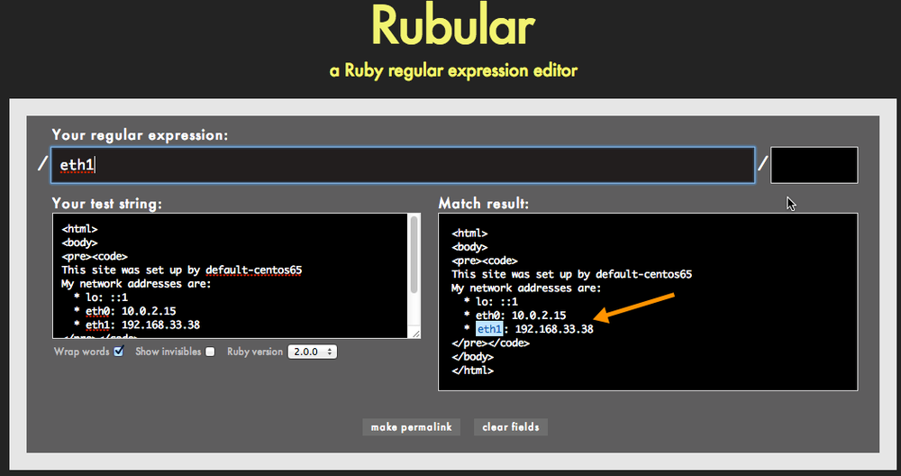
$ kitchen verify
-----> Starting Kitchen (v2.3.3)
-----> Verifying <default-centos65>...
Preparing files for transfer
-----> Busser installation detected (busser)
-----> Busser plugin detected: busser-serverspec
Removing /tmp/verifier/suites/serverspec
Transferring files to <default-centos65>
-----> Running serverspec test suite
/opt/chef/embedded/bin/ruby -I/tmp/verifier/suites/serverspec -I/tmp/verifier/gems/gems/rspec-support-3.9.0/lib:/tmp/verifier/gems/gems/rspec-core-3.9.0/lib /opt/chef/embedded/bin/rspec --pattern /tmp/verifier/suites/serverspec/\*\*/\*_spec.rb --color --format documentation --default-path /tmp/verifier/suites/serverspec
web site
responds on port 80
returns eth1 in the HTML body
Finished in 0.04039 seconds (files took 0.21886 seconds to load)
2 examples, 0 failures
Finished verifying <default-centos65> (0m1.05s).
-----> Kitchen is finished. (0m1.69s)
package资源需要Serverspec来检测操作系统信息。展示了Serverspec网站中对 service资源的文档。它可以用来检测某个程序包是否已经安装。在幕后，它其实首先需要检测是什运行什么操作系统，然后使用相应的命令，比如在RedHat中的rpm -q或 Ubuntu/Debian中的dpkg -query查看程序是否已经安装。
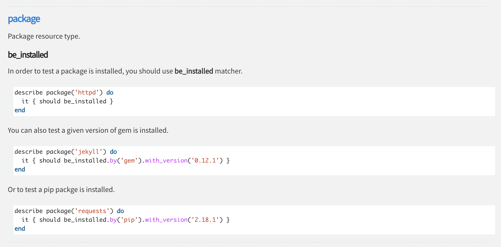
在默认情况下，Serverspec试图自动检测操作系统，这在大多数Linux和Unix系统中没有 问题。然而在某些系统中，你需要通过set方法重写默认的操作系统设置。
如果测试代码需要在Windows下运行，就需要在spec.rb文件中添加以下代码，因为 Serverspec在我们写作本书时无法自动检测Windows操作系统。更多相关信息可以在 Serverspec文档中找到。
/default/serverspec/default_spec.rb
require 'spec_helper'
describe 'web site' do
it 'responds on port 80' do
expect(port 80).to be_listening 'tcp'
end
it 'returns eth1 in the HTML body' do
expect(command('curl localhost:80').stdout).to match /eth1/
end
it 'has the apache web server installed' do
expect(package 'httpd').to be_installed
end
end
$ kitchen verify
-----> Starting Kitchen (v2.3.3)
-----> Verifying <default-centos65>...
Preparing files for transfer
-----> Busser installation detected (busser)
-----> Busser plugin detected: busser-serverspec
Removing /tmp/verifier/suites/serverspec
Transferring files to <default-centos65>
-----> Running serverspec test suite
/opt/chef/embedded/bin/ruby -I/tmp/verifier/suites/serverspec -I/tmp/verifier/gems/gems/rspec-support-3.9.0/lib:/tmp/verifier/gems/gems/rspec-core-3.9.0/lib /opt/chef/embedded/bin/rspec --pattern /tmp/verifier/suites/serverspec/\*\*/\*_spec.rb --color --format documentation --default-path /tmp/verifier/suites/serverspec
web site
responds on port 80
returns eth1 in the HTML body
has the apache web server installed
Finished in 0.10077 seconds (files took 0.25413 seconds to load)
3 examples, 0 failures
Finished verifying <default-centos65> (0m1.23s).
-----> Kitchen is finished. (0m1.87s)
如果需要告诉Serverspec我们具体运行的是哪个操作系统（CentOS 6)，我们可以添加 以下代码使用set关键字，
set :os, :family => 'redhat', :release => 6
require 'spec_helper'
set :os, :family => 'redhat', :release => 6
describe 'web site' do
it 'responds on port 80' do
expect(port 80).to be_listening 'tcp'
end
it 'returns eth1 in the HTML body' do
expect(command('curl localhost:80').stdout).to match /eth1/
end
it 'has the apache web server installed' do
expect(package 'httpd').to be_installed
end
end
kitchen test命令可以按顺序执行以下全部命令：
- kitchen destroy (if necessary)
- kitchen create
- kitchen converge
- kitchen setup
- kitchen verify
- kitchen destroy
你正在撰写测试代码的时候往往并不想使用这个命令，因为往往还需要频繁登录到测 试节点上调试以及寻找测试中的问题。但等于写完所有测试后，在Jenkins等类似自动化系统中设定运行这些测试的时候，kitchen test是一个方便的命令，可以用来清除现有环境、创建虚拟机、运行测试并在运行后再次清理环境。
同时，在撰写测试后并将代码井入版本控制系统之前，在全新的环境运行一次kitchen test这也是一个不错的主意。
现在运行 kitchen test 命令。结束后它会自动删除我们的测试环境，因为它自动运行以上五个命令：
$ kitchen test
-----> Starting Kitchen (v2.3.3)
-----> Cleaning up any prior instances of <default-centos65>
-----> Destroying <default-centos65>...
==> default: Stopping the VMware VM...
==> default: Deleting the VM...
Vagrant instance <default-centos65> destroyed.
Finished destroying <default-centos65> (0m22.79s).
-----> Testing <default-centos65>
-----> Creating <default-centos65>...
Bringing machine 'default' up with 'vmware_desktop' provider...
==> default: Cloning VMware VM: 'learningchef/centos65'. This can take some time...
==> default: Checking if box 'learningchef/centos65' version '1.0.7' is up to date...
==> default: Verifying vmnet devices are healthy...
==> default: Preparing network adapters...
WARNING: The VMX file for this box contains a setting that is automatically overwritten by Vagrant
WARNING: when started. Vagrant will stop overwriting this setting in an upcoming release which may
WARNING: prevent proper networking setup. Below is the detected VMX setting:
WARNING:
WARNING: ethernet0.pcislotnumber = "33"
WARNING:
WARNING: If networking fails to properly configure, it may require this VMX setting. It can be manually
WARNING: applied via the Vagrantfile:
WARNING:
WARNING: Vagrant.configure(2) do |config|
WARNING: config.vm.provider :vmware_desktop do |vmware|
WARNING: vmware.vmx["ethernet0.pcislotnumber"] = "33"
WARNING: end
WARNING: end
WARNING:
WARNING: For more information: https://www.vagrantup.com/docs/vmware/boxes.html#vmx-whitelisting
==> default: Fixed port collision for 22 => 2222. Now on port 2201.
==> default: Starting the VMware VM...
==> default: Waiting for the VM to receive an address...
==> default: Forwarding ports...
default: -- 22 => 2201
==> default: Waiting for machine to boot. This may take a few minutes...
default: SSH address: 127.0.0.1:2201
default: SSH username: vagrant
default: SSH auth method: private key
default:
default: Vagrant insecure key detected. Vagrant will automatically replace
default: this with a newly generated keypair for better security.
default:
default: Inserting generated public key within guest...
default: Removing insecure key from the guest if it's present...
default: Key inserted! Disconnecting and reconnecting using new SSH key...
==> default: Machine booted and ready!
==> default: Setting hostname...
==> default: Configuring network adapters within the VM...
==> default: Machine not provisioned because `--no-provision` is specified.
[SSH] Established
Vagrant instance <default-centos65> created.
Finished creating <default-centos65> (0m44.58s).
-----> Converging <default-centos65>...
Preparing files for transfer
$$$$$$ You must set your run_list in your Policyfile instead of kitchen config. The run_list in your config will be ignored.
$$$$$$ Ignored run_list: ["recipe[apache-test::default]"]
Installing cookbooks for Policyfile /Users/.../Devops_sap/Chef_Doc/learningchef/chap12/apache-test/Policyfile.rb using `chef install`
Installing cookbooks from lock
Installing apache-test 0.1.0
Updating policy lock using `chef update`
Attributes already up to date
Building policy apache-test
Expanded run list: recipe[apache-test::default]
Caching Cookbooks...
Installing apache-test >= 0.0.0 from path
Lockfile written to /Users/.../Devops_sap/Chef_Doc/learningchef/chap12/apache-test/Policyfile.lock.json
Policy revision id: ade7da2f2a1dcabbfcf963ab2cf6bd1157b44c9782565bcc6194ab8faf6d018c
Preparing dna.json
Exporting cookbook dependencies from Policyfile /var/folders/r7/nml_dsbn44gcd2jlqh7s2w940000gn/T/default-centos65-sandbox-20191210-14778-1x4b0g2...
Exported policy 'apache-test' to /var/folders/r7/nml_dsbn44gcd2jlqh7s2w940000gn/T/default-centos65-sandbox-20191210-14778-1x4b0g2
To converge this system with the exported policy, run:
cd /var/folders/r7/nml_dsbn44gcd2jlqh7s2w940000gn/T/default-centos65-sandbox-20191210-14778-1x4b0g2
chef-client -z
Removing non-cookbook files before transfer
Preparing validation.pem
Preparing client.rb
-----> Installing Chef install only if missing package
Downloading https://omnitruck.chef.io/install.sh to file /tmp/install.sh
Trying wget...
Trying curl...
Download complete.
el 6 x86_64
Getting information for chef stable for el...
downloading https://omnitruck.chef.io/stable/chef/metadata?v=&p=el&pv=6&m=x86_64
to file /tmp/install.sh.3296/metadata.txt
trying wget...
trying curl...
sha1 c332e5aef6cf70d1df1e1786926c474eedae1dc2
sha256 ddb6e94a65568e6247aa335ef7d2dd69c300c9d2e2df098997b08cf9f6f0c473
url https://packages.chef.io/files/stable/chef/15.5.17/el/6/chef-15.5.17-1.el6.x86_64.rpm
version 15.5.17
downloaded metadata file looks valid...
downloading https://packages.chef.io/files/stable/chef/15.5.17/el/6/chef-15.5.17-1.el6.x86_64.rpm
to file /tmp/install.sh.3296/chef-15.5.17-1.el6.x86_64.rpm
trying wget...
trying curl...
Comparing checksum with sha256sum...
WARNING WARNING WARNING WARNING WARNING WARNING WARNING WARNING WARNING
You are installing a package without a version pin. If you are installing
on production servers via an automated process this is DANGEROUS and you will
be upgraded without warning on new releases, even to new major releases.
Letting the version float is only appropriate in desktop, test, development or
CI/CD environments.
WARNING WARNING WARNING WARNING WARNING WARNING WARNING WARNING WARNING
Installing chef
installing with rpm...
warning: /tmp/install.sh.3296/chef-15.5.17-1.el6.x86_64.rpm: Header V4 DSA/SHA1 Signature, key ID 83ef826a: NOKEY
Preparing... ########################################### [100%]
1:chef ########################################### [100%]
Thank you for installing Chef Infra Client! For help getting started visit https://learn.chef.io
Transferring files to <default-centos65>
+---------------------------------------------+
✔ 2 product licenses accepted.
+---------------------------------------------+
Starting Chef Infra Client, version 15.5.17
Creating a new client identity for default-centos65 using the validator key.
Using policy 'apache-test' at revision 'ade7da2f2a1dcabbfcf963ab2cf6bd1157b44c9782565bcc6194ab8faf6d018c'
resolving cookbooks for run list: ["apache-test::default@0.1.0 (daed588)"]
Synchronizing Cookbooks:
- apache-test (0.1.0)
Installing Cookbook Gems:
Compiling Cookbooks...
Converging 3 resources
Recipe: apache-test::default
* yum_package[httpd] action install
- install version 0:2.2.15-69.el6.centos.x86_64 of package httpd
* service[httpd] action enable
- enable service service[httpd]
* service[httpd] action start
- start service service[httpd]
* template[/var/www/html/index.html] action create
- create new file /var/www/html/index.html
- update content in file /var/www/html/index.html from none to e9c94f
--- /var/www/html/index.html 2019-12-10 06:36:06.112501991 +0000
+++ /var/www/html/.chef-index20191210-3421-xm9pxz.html 2019-12-10 06:36:06.112501991 +0000
@@ -1 +1,15 @@
+<html>
+<body>
+<pre><code>
+This site was set up by default-centos65
+My network addresses are:
+ * lo:
+ ::1
+ * eth0:
+ 172.16.72.159
+ * eth1:
+ 192.168.33.38
+</code></pre>
+</body>
+</html>
- change mode from '' to '0644'
Running handlers:
Running handlers complete
Chef Infra Client finished, 4/4 resources updated in 55 seconds
Downloading files from <default-centos65>
Finished converging <default-centos65> (1m33.79s).
-----> Setting up <default-centos65>...
Finished setting up <default-centos65> (0m0.00s).
-----> Verifying <default-centos65>...
Preparing files for transfer
-----> Installing Busser (busser)
Fetching thor-0.19.0.gem
Fetching busser-0.7.1.gem
Successfully installed thor-0.19.0
Successfully installed busser-0.7.1
2 gems installed
-----> Installing Busser plugin: busser-serverspec
Plugin serverspec installed (version 0.5.10)
-----> Running postinstall for serverspec plugin
Suite path directory /tmp/verifier/suites does not exist, skipping.
Transferring files to <default-centos65>
-----> Running serverspec test suite
-----> Installing Serverspec..
Fetching rspec-expectations-3.9.0.gem
Fetching rspec-3.9.0.gem
Fetching multi_json-1.14.1.gem
Fetching diff-lcs-1.3.gem
Fetching rspec-mocks-3.9.0.gem
Fetching rspec-its-1.3.0.gem
Fetching net-ssh-5.2.0.gem
Fetching net-scp-2.0.0.gem
Fetching serverspec-2.41.5.gem
Fetching net-telnet-0.1.1.gem
Fetching specinfra-2.82.4.gem
Fetching sfl-2.3.gem
-----> serverspec installed (version 2.41.5)
/opt/chef/embedded/bin/ruby -I/tmp/verifier/suites/serverspec -I/tmp/verifier/gems/gems/rspec-support-3.9.0/lib:/tmp/verifier/gems/gems/rspec-core-3.9.0/lib /opt/chef/embedded/bin/rspec --pattern /tmp/verifier/suites/serverspec/\*\*/\*_spec.rb --color --format documentation --default-path /tmp/verifier/suites/serverspec
web site
responds on port 80
returns eth1 in the HTML body
has the apache web server installed
Finished in 0.03509 seconds (files took 0.23573 seconds to load)
3 examples, 0 failures
Finished verifying <default-centos65> (0m15.53s).
-----> Destroying <default-centos65>...
==> default: Stopping the VMware VM...
==> default: Deleting the VM...
Vagrant instance <default-centos65> destroyed.
Finished destroying <default-centos65> (0m21.31s).
Finished testing <default-centos65> (3m18.00s).
-----> Kitchen is finished. (3m18.69s)
5、使用Foodcritic进行自动化测试
Severspec是一个用于执行菜谱的点对点测试的非常强大的工具。然而，执行全部测试可能需要较长时间，而有些错误可以在执行这类测试之前更快发现。有一个称为Foodcritic的工具可以很快提供有限的反馈。
Foodcritic被设计为在写Chef代码时使用，它甚至可以集成到编辑器中。在写Chef代码的时候， Foodcritic可以给你提供快速的关于代码风格的反馈，让你通过定义规则（rules) 来指定理想的代码风格。
Foodcritic命令需要在开发机器上执行，而不是测试节点，因此非常快。可以现在就试试。确保。apache-test菜谱是当前工作目录，然后运行以下命令。
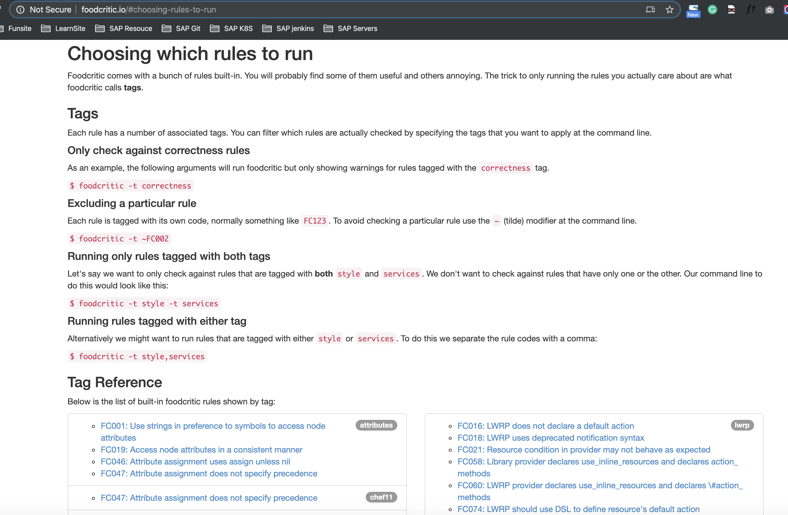
Chef Development Kit:
$ foodcritic .
Chef Client:
$ foodcritic .
FC008: Generated cookbook metadata needs updating: ./metadata.rb:2
FC008: Generated cookbook metadata needs updating: ./metadata.rb:3
$ foodcritic .
Checking 3 files
x.x
FC008: Generated cookbook metadata needs updating: ./metadata.rb:2
FC008: Generated cookbook metadata needs updating: ./metadata.rb:3
FC064: Ensure issues_url is set in metadata: ./metadata.rb:1
FC065: Ensure source_url is set in metadata: ./metadata.rb:1
FC067: Ensure at least one platform supported in metadata: ./metadata.rb:1
FC078: Ensure cookbook shared under an OSI-approved open source license: ./metadata.rb:1
FC093: Generated README text needs updating: ./README.md:1
$ foodcritic .
Checking 3 files
x..
FC064: Ensure issues_url is set in metadata: ./metadata.rb:1
FC065: Ensure source_url is set in metadata: ./metadata.rb:1
FC067: Ensure at least one platform supported in metadata: ./metadata.rb:1
FC078: Ensure cookbook shared under an OSI-approved open source license: ./metadata.rb:1
6、使用ChefSpec进行自动化测试
另一个可以帮助在开发周期早期进行测试的工具是ChefSpec, 你甚至可以在写代码前就先完成测试。
ChefSpec可以用来生成可运行的文档（runnable documentation). 它要用途是帮助你更好地组织代码以及完善文档。
同时，ChefSpec测试有时也能在你更改代码的时候帮助发现问题。而且，以测试驱动的Chef代码往往具备更高的质量。
和Serverspec类似，ChefSpec基于RSpec. ChefSpec使用RSpec的describe格式来创建可运行的文档。ChefSpec文档所用的格式和Serverspec的稍有不同，如下所示：
describe '<recipe_name>' do
<perform in-memory Chef run>
<examples here>
end
例如，你会使用以下describe代码块来包含针对apache-test::default菜谱的测试：
describe 'apache-test::default' do
...
end
要执行一次驻内存的Chef运行，需要使用chef-spec gem提供的类核方法，添加以下语句 到describe格式中。在本例中，要测试apache-test::default菜谱，就可以使用以下代 码：
require 'chefspec'
describe 'apache::default' do
chef_run = ChefSpec::Runner.new.converge('apache-test::default')
<descriptions here>
end
ChefSpec使用类似Serverspec的expect格式。ChefSpec拥有其自己的资源命令及匹配器。以下这个例子可以展示ChefSpec检查我们的Chef代码，看是否已经安装httpd程序 包：
require 'chefspec'
describe 'apache::default' do
chef_run = ChefSpec::Runner.new.converge('apache-test::default')
it 'installs apache2' do
expect(chef_run).to install_package('httpd')
end
end
记住，这些测试代码只是用来作为可运行的文档使用的。这里的expect语句并不会在驻内存的Chef运行时执行httpd程序包安装过程。ChefSpec只是通过驻内存的Chef运行来验证菜谱语法结构；
在本例中，确保Chef代码指示Chef安装这个程序包。简而言之，此类测试主要用来作为可运行的代码文档测试你的Chef代码包含预期的内容；而Serverspec测试则用来真正在和生产环境类似的虚拟机中运行Chef并测试运行结果是否与预期相符。
在expect格式中使用的ChefSpec的资源命令通常是驻内存Chef运行的结果。
ChefSpec的匹配器的资源可以在其https://docs.chef.io/chefspec.html找到，
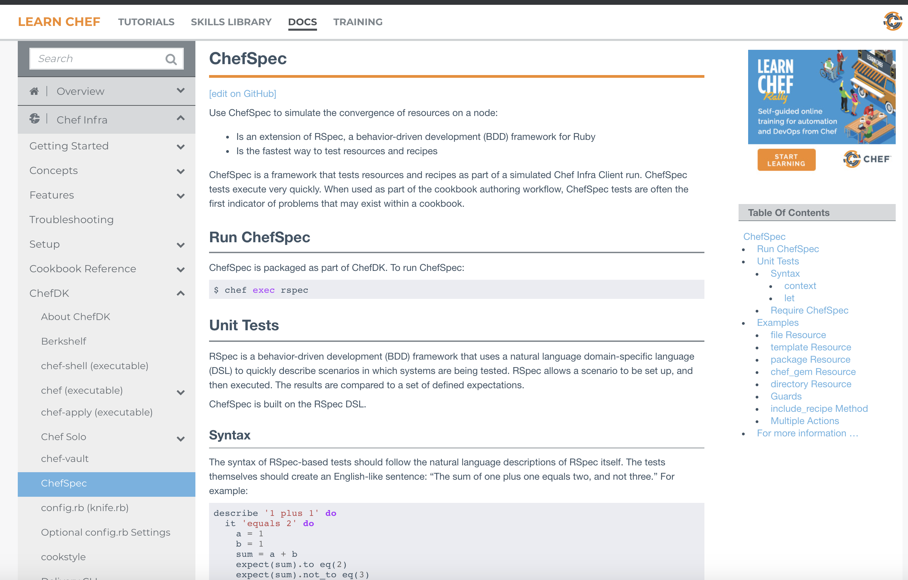
**撰写你的第一个ChefSpec测试 **
让我们来写一些ChefSpec代码。我们将使用install package匹配器， ChefSpec测试的默认位置是菜谱目录下的spec目录。确保apache-test菜谱目录是当前的 工作目录，然后在该目录下创建一个spec目录：
创建default_spec.rb文件。包含ChefSpec代码的文件根据约定应以＊_spec.rb结尾。
spec/default_spec.rb
require 'chefspec'
describe 'apache-test::default' do
chef_run = ChefSpec::Runner.new.converge('apache-test::default')
it 'installs apache2' do
expect(chef_run).to install_package('httpd')
end
end
$ rspec --color
.
Finished in 0.00042 seconds (files took 1.12 seconds to load)
1 example, 0 failures
当rspec运行时，ChefSpec检查Chef代码并确保它包含package资源来安装httpd程序包。 如果ChefSpec确认代码中包含这些内容，测试则通过，你可以在刚刚的rspec命令结果 中看到测试成功通过。
7、使用Let进行惰性求值
我们需要再介绍一个属于Rspec核心的语法：使用let方法进行惰性求值。图展示了 ChefSpec如何使用let方法来缓存Che-fSpec::Runner对象的结果。
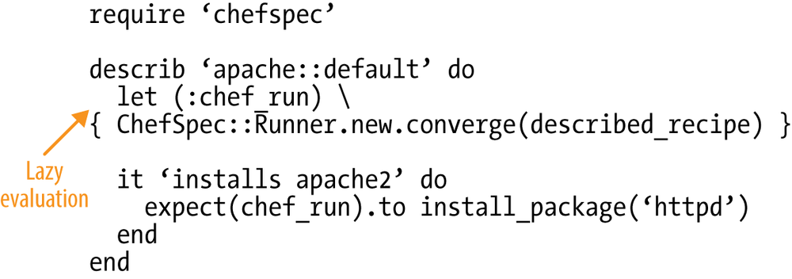
调用ChefSpec::Runner是一个相对比较占用资源的行为。let(）方法将ChefSpec::Runner 的计算延迟到它第一次被使用时才发生而不是当其被引用时，因此我们将这种机制称为 “惰性求值”。
使用let(）方法允许RSpec将ChefSpec::Runner的结果缓存，并在同一个测试中多次用到时直接使用其值。 再者，let(）语句允许你只指定正在测试的配方单一次，对比以下的不使用let以及使用let一的例子，注意在使用let时，ChefSpec::Runner使用一个described_recipe宏来计算配方单名字而无须重复指定。这是个很小的优化，但挺有用的。
Without let:
require 'chefspec'
describe 'apache::default' do
chef_run = ChefSpec::Runner.new.converge('apache-test::default')
it 'installs apache2' do
expect(chef_run).to install_package('httpd')
end
end
With let:
require 'chefspec'
describe 'apache::default' do
let (:chef_run) { ChefSpec::Runner.new.converge(described_recipe) }
it 'installs apache2' do
expect(chef_run).to install_package('httpd')
end
end
apache-test/spec/default_spec.rb
require 'chefspec'
describe 'apache-test::default' do
let (:chef_run) { ChefSpec::Runner.new.converge(described_recipe) }
it 'installs apache2' do
expect(chef_run).to install_package('httpd')
end
end
$ rspec --color
.
Finished in 0.00042 seconds (files took 1.12 seconds to load)
1 example, 0 failures
8、生成一份测试覆盖报告
另外一个有用的ChefSpec的帮助方法是ChefSpec::Coverage.report!。
它会生成一份列 表告诉你哪些配方单中使用的资源被测试覆盖，哪些没有。你可以用这份报告来引导测 试。
编辑default-spec.rb，at_exit方法是Ruby核心的一部分，允许你在程序退出时运行一段指定的代码。在本例中，我们希望运行ChefSpec::Coverage.report！方法。
方法名字中的感叹号（!）是一个Ruby的约定，告诉开发者这个方法是危险的。在本例中，危险意味着ChefSpec::Coverage.report！必须在所有测试运行完成后再运行，并且每次程序运行时只能运行一次。我们使用at_exit来确保report！只在所有测试运行结束后运行一次。
apache-test/spec/default_spec.rb
require 'chefspec'
at_exit { ChefSpec::Coverage.report! }
describe 'apache-test::default' do
let (:chef_run) { ChefSpec::Runner.new.converge(described_recipe) }
it 'installs apache2' do
expect(chef_run).to install_package('httpd')
end
end
$ rspec --color
.
Finished in 0.00337 seconds (files took 1.11 seconds to load)
1 example, 0 failures
ChefSpec Coverage report generated...
Total Resources: 3
Touched Resources: 1
Touch Coverage: 33.33%
Untouched Resources:
service[httpd] /recipes/default.rb:12
template[/var/www/html/index.html] /recipes/default.rb:16
9、在spec_helper.rb中共享测试代码
和Serverspec类似，ChefSpec也支持将通用的代码共享在spec_helper.rb文件中。
和前面ServerSpec中的例子一样，这里我们需要假设有多个测试文件，然后移动一些共享的代码到spec_helper.rb。
用所示的内容创建spec/spec_helper.rb文件。我们将require和at_exit移到这个共享文件中。
spec/spec_helper.rb
require 'chefspec'
at_exit { ChefSpec::Coverage.report! }
apache-test/spec/default_spec.rb
require 'spec_helper'
describe 'apache-test::default' do
let (:chef_run) { ChefSpec::Runner.new.converge(described_recipe) }
it 'installs apache2' do
expect(chef_run).to install_package('httpd')
end
end
$ rspec --color
.
Finished in 0.00337 seconds (files took 1.11 seconds to load)
1 example, 0 failures
ChefSpec Coverage report generated...
Total Resources: 3
Touched Resources: 1
Touch Coverage: 33.33%
Untouched Resources:
service[httpd] /recipes/default.rb:12
template[/var/www/html/index.html] /recipes/default.rb:16
Testing Your Automation Code (Vagrant Version)
https://www.slideshare.net/misheska/testing-your-automation-code-vagrant-version-v02
10、本节小结
- 重温Apache菜谱
- 使用
Serverspec进行自动化测试 RSpec DSL语法- 使用
Foodcritic进行自动化测试 - 使用
ChefSpec进行自动化测试 - 使用
Let进行惰性求值 - 在
spec_helper.rb中共享测试代码
# chef client
$ sudo gem install foodcritic --no-ri --no-rdoc
$ sudo gem install chefspec --no-ri --no-rdoc
$ chef generate template index.html
$ kitchen verify
$ kitchen test
$ foodcritic .
$ rspec --color